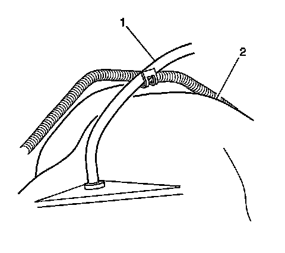
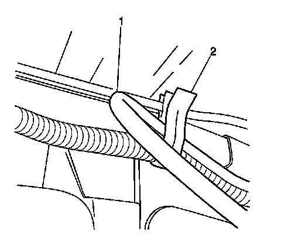
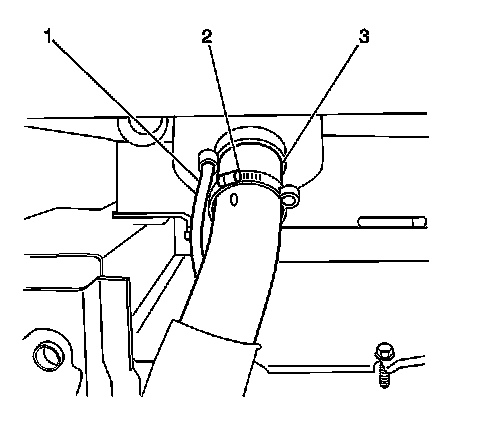

Vent Hose Replacement
Vent Hose Replacement
Removal Procedure
Important: Note the vent hose routing to aid installation.
1. Raise and support the vehicle.

2. Remove the vent hose (1) from the top of the rear axle (2).

3. Remove the vent hose (1) from the clip (2) on the frame.

4. Remove the vent hose (1) from the clamp (2) on the filler hose.
Installation Procedure
1. If replacing the vent hose, ensure the hose is the same length as the original vent hose. If the original vent hose is not available, cut the replacement hose to one of the following lengths:
^ For vehicles with a 3988 mm (157 in) wheelbase, cut the hose to a length of 1475 mm (58 in).
^ For vehicles with a 4039 mm (159 in) wheelbase, cut the hose to a length of 1575 mm (62 in).
^ For vehicles with a 5309 mm (209 in) wheelbase, cut the hose to a length of 1475 mm (79.75 in).
2. Install the vent hose (1) to the clamp (2) on the filler hose (3).
^ Route the same way as when removed.
^ Ensure that the hose is free of kinks and is routed clear of sharp objects.
^ Ensure that the vent is not plugged.
3. Install the vent hose (1) in the clip (2) on the frame.
4. Install the vent hose (1) to the top of the rear axle (2).
5. Remove the supports and lower the vehicle.